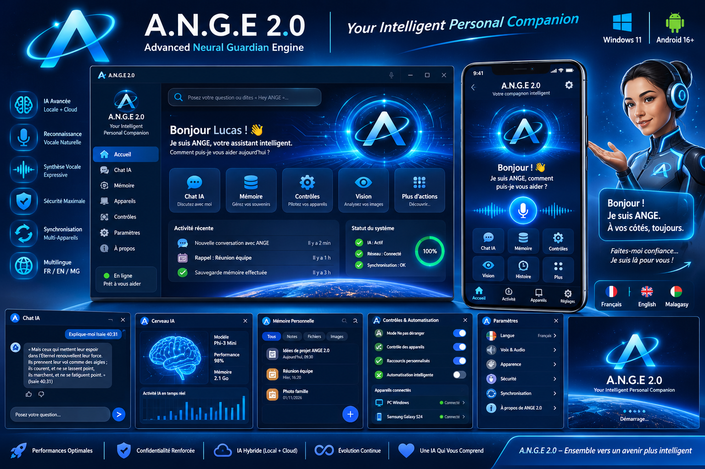
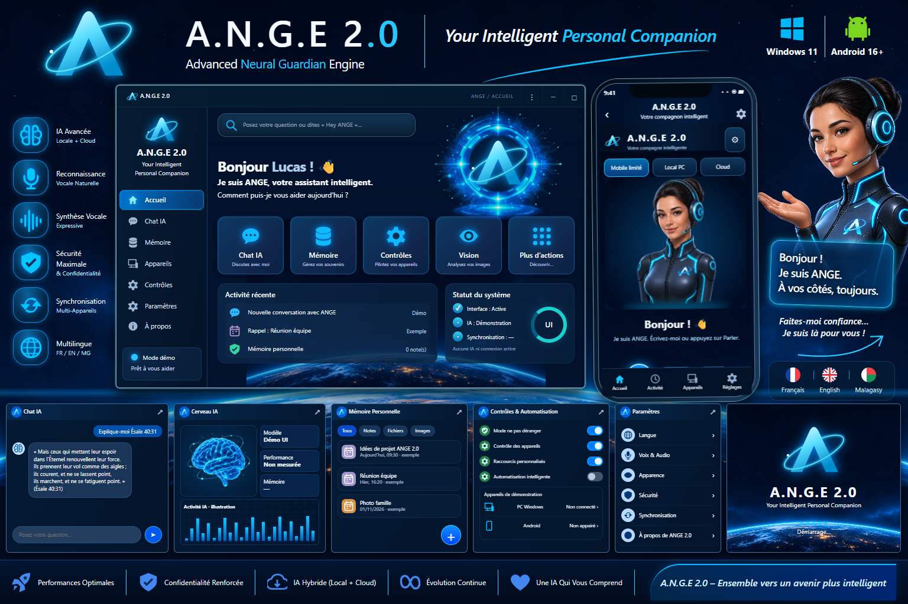

Déplacez le curseur : la partie gauche montre la capture de l’interface reconstruite, la partie droite montre votre image de référence. Les illustrations et certains textes de statut diffèrent. Ce comparateur présente des images ; ouvrez ici le prototype interactif.

